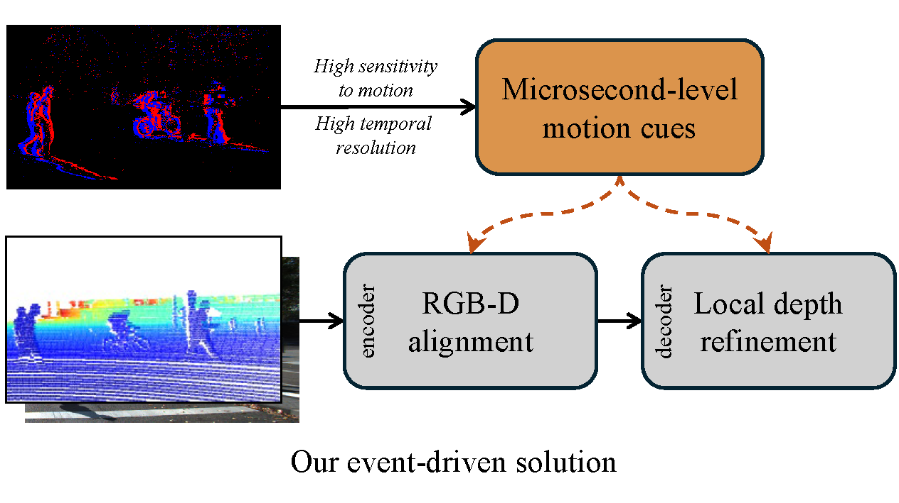
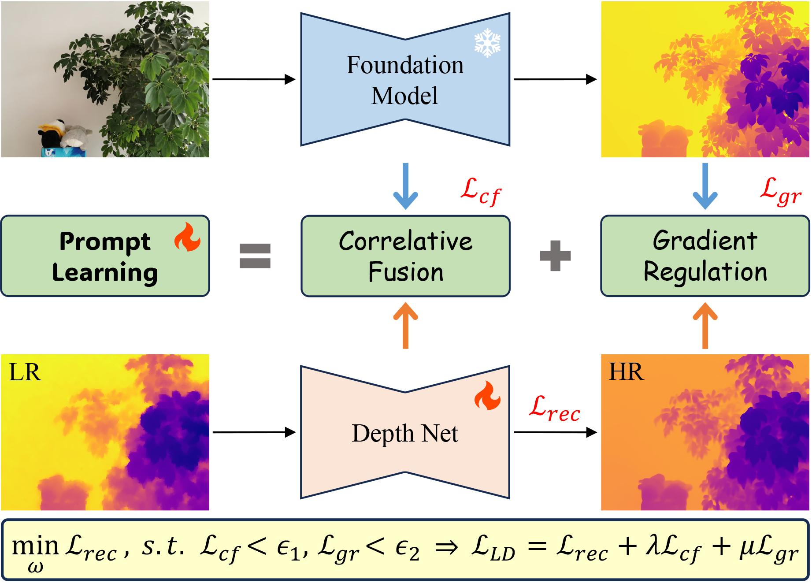

|
I'm currently a research fellow at National University of Singapore (NUS), working closely with Prof. Gim Hee Lee in 3D computer vision. Before that, I obtained my PhD degree at PCALab, Nanjing University of Science and Technology (NJUST) in June 2024, advised by Prof. Jian Yang and co-advised by Prof. Jun Li. In June 2018, I received the Bachelor degree from NJUST. Welcome to contact me for discussion and cooperation. Email / CV / GitHub / Google Scholar /
|

|
|
My research interests include computer vision and machine learning, especially on depth estimation, depth completion, depth super-resolution, and NeRF rendering. These tasks are crucial for various applications, such as self-driving, robotic vision, and related 3D visual perception. I am also fascinated by the task of 3D occupancy prediction. |
|
Yuan Wu*, Zhiqiang Yan* ✉, Yigong Zhang, Xiang Li, Jian Yang ✉ arXiv, 2025
Existing vision-based methods perform well on daytime benchmarks but struggle in nighttime scenarios due to limited visibility and challenging lighting conditions.
For the first time, we introduce LIAR, a novel framework that learns illumination-affined representations for nighttime occupacy prediction.
|
|  |
Zhiqiang Yan, Jianhao Jiao, Zhengxue Wang, Gim Hee Lee arXiv, 2025
We introduce EventDC, the first depth completion framework that tackles the challenges of dynamic scenes by harnessing the unique strengths of event data.
To mitigate the adverse effects of fast ego-motion and object motion, EventDC incorporates two event-driven modules. Furthermore, to support research in
this area, we construct the first benchmark for event-based depth completion comprising one real-world and two synthetic datasets.
|
|  |
Zhiqiang Yan, Zhengxue Wang, Haoye Dong, Jun Li, Jian Yang, Gim Hee Lee arXiv, 2025
We introduce DuCos, a novel depth super-resolution framework grounded in Lagrangian duality theory,
offering a flexible integration of multiple constraints and reconstruction objectives to enhance accuracy and robustness.
Our DuCos is the first to significantly improve generalization across diverse scenarios with foundation models as prompts.
Crucially, these prompts are seamlessly embedded into the Lagrangian constraint term, forming a synergistic and principled framework.
|
|
Zhengxue Wang*, Zhiqiang Yan* ✉, Jinshan Pan, Guangwei Gao, Kai Zhang, Jian Yang ✉ CVPR, 2025, oral
For the first time, we introduce a Degradation Oriented and Regularized Network (DORNet) designed for real-world depth super-resolution, addressing the challenges posed by unconventional and unknown degradations.
The core concept involves estimating implicit degradation representations to achieve effective RGB-D fusion. This degradation learning process is self-supervised.
|

|
Zhiqiang Yan, Zhengxue Wang, Kun Wang, Jun Li ✉, Jian Yang ✉ CVPR, 2025
We propose a novel degradation-aware framework SigNet that transforms depth completion into depth enhancement for the first time.
SigNet eliminates the mismatch and ambiguity caused by direct convolution over irregularly sampled sparse data.
Meanwhile, it builds a self-supervised degradation bridge between coarse depth and targeted dense depth for effective RGB-D fusion.
|

|
Yuan Wu*, Zhiqiang Yan* ✉, Zhengxue Wang, Xiang Li, Le Hui, Jian Yang ✉ ICRA, 2025
For the first time, we introduce the explicit height prior into the vision-based 3D occupancy predition task. Owing to the novel deep height decoupling and sampling stratagy,
our model achieves state-of-the-art performance even with minimal input cost.
|

|
Junkai Fan, Kun Wang, Zhiqiang Yan, Xiang Chen, Shangbin Gao, Jun Li ✉, Jian Yang ✉ AAAI, 2025
For the first time, we jointly deal with video dehazing and depth estimation.
We propose a novel depth-centric learning framework that combines an atmospheric scattering model (ASM)
with brightness consistency constraint (BCC).
The core idea is to use a shared depth estimation network for both ASM and BCC.
|

|
Kun Wang, Zhiqiang Yan, Junkai Fang, Wanlu Zhu, Xiang Li, Jun Li ✉, Jian Yang ✉ NeurIPS, 2024
DCDepth transforms depth patches into the discrete cosine domain to estimate frequency coefficients, modeling local depth correlations.
The frequency transformation separates depth information into low-frequency (core structure) and high-frequency (details) components.
The progressive strategy predicts low-frequency components first for global context, then refines details with the high-frequency.
|

|
Jiangwei Weng, Zhiqiang Yan, Ying Tai, Jianjun Qian, Jian Yang, Jun Li ✉ NeurIPS, 2024
MambaLLIE introduces an implicit Retinex-aware low light enhancer with a global-then-local state space design.
This design enables not only the preservation of local dependencies but also comprehensive global modeling.
Extensive experiments show that MambaLLIE significantly surpasses SOTA CNN and Transformer-based methods.
|

|
Zhiqiang Yan, Yuankai Lin, Kun Wang, Yupeng Zheng, Yufei Wang, Zhenyu Zhang, Jun Li ✉, Jian Yang ✉ CVPR, 2024, oral
TPVD decomposes 3D point cloud into three views to capture the fine-grained 3D geometry of scenes. TPV Fusion and GSPN are proposed to refine the depth.
Furthermore, we build a novel depth completion dataset named TOFDC, acquired by the time-of-flight (TOF) sensor and the color camera on smartphones.
|

|
Zhiqiang Yan, Yupeng Zheng, Deng-Ping Fan, Xiang Li, Jun Li ✉, Jian Yang ✉ Visual Intelligence, 2024
Safe driving in night is critical. Existing image guided methods perform well on daytime depth perception self-driving benchmarks, but struggle in nighttime scenarios with poor visibility and
complex illumination. For the first time, LDCNet exploits to provide a potential solution and introduces two nighttime depth benchmarks.
|

|
Zhengxue Wang*, Zhiqiang Yan* ✉, Ming-Hsuan Yang, Jinshan Pan, Ying Tai, Guangwei Gao, Jian Yang ✉ arXiv, 2024
To address the issues of texture interference and edge inaccuracy in GDSR, for the first time, SPFNet introduces the priors surface normal and semantic map from large-scale models.
As a result, SPFNet achieves state-of-the-art performance.
|

|
Zhiqiang Yan, Xiang Li, Le Hui, Zhenyu Zhang, Jun Li ✉, Jian Yang ✉ IJCV, 2025
On the basis of RigNet, in semantic guidance branch, RigNet++ introduces large-scale model SAM, to supply depth with semantic prior.
In image guidance branch, RigNet++ design a dense repetitive hourglass network (DRHN) to provide powerful contextual instruction for depth
prediction. In addition, RigNet++ proposes a region-aware spatial propagation network (RASPN) for further depth refinement based on the
semantic prior constraint.
|

|
Zhengxue Wang, Zhiqiang Yan ✉, Jian Yang ✉ AAAI, 2024
SGNet introduces a novel perspective that exploits the gradient and frequency domains for the structure enhancement of DSR task,
surpassing the five state-of-the-art methods by 16% (RGB-D-D), 24% (Middlebury), 21% (Lu) and 15% (NYU-v2) in average.
|

|
Kun Wang, Zhiqiang Yan, Huang Tian, Zhenyu Zhang, Xiang Li, Jun Li ✉, Jian Yang ✉ AAAI, 2024
This paper proposes AltNeRF, a novel framework designed to create resilient NeRF representations using self-supervised monocular depth estimation (SMDE) from monocular videos,
without relying on known camera poses. Extensive experiments showcase the compelling capabilities of AltNeRF in generating high-fidelity and robust novel views that closely resemble reality.
|


|
Zhiqiang Yan, Xiang Li, Kun Wang, Shuo Chen ✉, Jun Li ✉, Jian Yang ICML, 2023
Standard MSE or MAE loss function is commonly used in limited field-of-vision depth completion, treating each pixel equally under a basic assumption that all pixels have same contribution during optimization.
However, the assumption is inapplicable to panoramic data due to its latitude-wise distortion and high uncertainty nearby textures and edges.
To handle these challenges, this paper proposes the distortion and uncertainty aware loss (DUL) that consists of a distortion-aware loss and an uncertainty-aware loss.
|

|
Zhiqiang Yan, Kun Wang, Xiang Li, Zhenyu Zhang, Jun Li ✉, Jian Yang ✉ AAAI, 2023, oral
DesNet first introduces a decomposed scale-consistent learning strategy, which disintegrates the absolute depth into relative depth prediction and global scale estimation, contributing to individual learning benefits.
Extensive experiments show the superiority of DesNet on KITTI benchmark, ranking 1st and surpassing the second best more than 12% in RMSE.
|

|
Zhiqiang Yan, Kun Wang, Xiang Li, Zhenyu Zhang, Jun Li ✉, Jian Yang ✉ ECCV, 2022
RigNet explores a repetitive design for depth completion to tackle the blurry guidance in image and unclear structure in depth.
Extensive experiments show that RigNet achieves superior or competitive results on KITTI benchmark and NYUv2 dataset.
|


|
Zhiqiang Yan*, Xiang Li*, Kun Wang, Zhenyu Zhang, Jun Li ✉, Jian Yang ✉ ECCV, 2022
For the first time, we enable the masked pre-training in a Convolution-based multi-modal task, instead of the Transformer-based single-modal task.
What's more, we introduce the panoramic depth completion, a new task that facilitates 3D reconstruction.
|

|
Zhiqiang Yan, Kun Wang, Xiang Li, Zhenyu Zhang, Guangyu Li ✉, Jun Li ✉, Jian Yang TNNLS, 2022
Motivated by pratical applications, this paper introduces a new task, i.e., incomplete depth super-resolution (IDSR),
which recovers dense and high-resolution depth from incomplete and low-resolution one.
|


|
Kun Wang*, Zhenyu Zhang*, Zhiqiang Yan, Xiang Li, Baobei Xu, Jun Li ✉, Jian Yang ✉ ICCV, 2021
RNW introduces a nighttime self-supervised monocular depth estimation framework.
The low visibility brings weak textures while the varying illumination breaks brightness-consistency assumption.
To address these problems, RNW proposes the novel Priors-Based Regularization, Mapping-Consistent Image Enhancement, and
Statistics-Based Mask.
|
|
|
|
This webpage is forked from Junkai Fan. Thanks to him! |